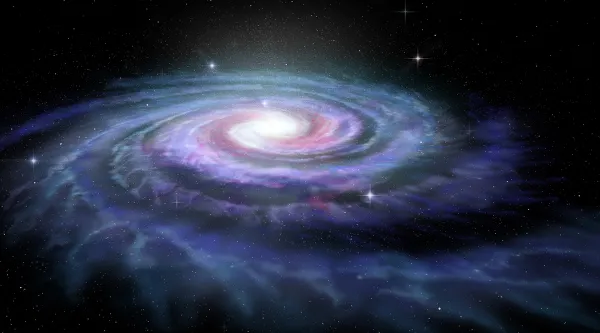

Descubra os tipos de galáxias e seus segredos fascinantes
As galáxias são estruturas fundamentais do cosmo e são importantes para a compreensão do Universo. Elas são formadas por estrelas, planetas, poeira, gases e matéria escura, e são agrupadas pela gravidade.
Tipos de Galáxias:
A classificação das galáxias é feita por meio da observação de seu formato. Identificam-se ao menos três tipos de galáxias: as elípticas, as espirais e as irregulares.
Galáxia de Andrômeda, um exemplo de galáxia elípticaElípticas
possuem forma circular e achatada. As galáxias elípticas são integradas por uma menor quantidade de poeira e gás quando comparadas às demais. Possuem estrelas muito antigas, e há pouca ou nenhuma atividade de formação de novos astros. Algumas das galáxias elípticas são muito alongadas, e as maiores delas chegam a até 300.000 anos-luz de diâmetro, de acordo com a Nasa. As menores, chamadas de galáxias anãs, são, no entanto, mais comuns. Aproximadamente um terço das galáxias do Universo tem formato elíptico, como Andrômeda.

Via Láctea, uma galáxia espiralEspirais
São as mais comuns e correspondem a dois terços de todas as galáxias conhecidas, uma delas a Via Láctea. As galáxias espirais possuem uma forma que se assemelha a um disco, composto por braços que a circundam, os quais podem sair diretamente de uma região central, denominada núcleo (espirais normais), ou de uma barra de estrelas que atravessa o seu centro (espirais barradas). Aparecem com uma cor branco-azulada e são compostas por gases, poeira e estrelas, havendo intenso processo de formação de novos astros no seu interior.
Pequena Nuvem de Magalhães, uma galáxia anã do tipo irregularIrregular
Como o próprio nome sugere, as galáxias irregulares não possuem um formato definido que permita uma classificação mais pormenorizada. São formações muito antigas, que apareceram anteriormente às elípticas e espirais. Elas são formadas por poeira e gases, e a sua forma irregular ocorre em função da influência do campo gravitacional de outras galáxias localizadas na sua proximidade. De acordo com a Nasa, esse tipo de galáxia era o mais abundante no início da composição do Universo e, em função disso, aquelas observadas hoje em dia são muito antigas.
GALÁXIAS NO UNIVERSO OBSERVÁVEL
Mistérios do Cosmos
Estamos sozinhos?
A pergunta que não quer calar: será que estamos sozinhos no Universo? Em 1961, o astrofísico Frank Drake postulou uma equação polêmica sugerindo que, levando em conta diversos fatores, a probabilidade de existir vida em outro lugar é extremamente alta. Drake contabilizou a formação de novas estrelas, a quantidade de estrelas com planetas, a combinação de condições para a existência de vida, entre outras especificações. Ainda não encontramos vida em nenhum canto da galáxia, mas isso não significa que devemos perder as esperanças.
As bolhas de radiação no centro da Via Láctea
O telescópio Fermi, capaz de detectar raios gama no espaço, registrou em 2010 gigantescas bolhas de radiação que emanam em direções opostas a partir do centro da Via Láctea. Essas estruturas se estendem a 20 mil anos-luz para cima e para baixo do plano espacial.
Universo Paralelo
Podemos não estar sozinhos e podemos não ser únicos. A teoria de pesquisadores físicos é de que podemos estar em um multiverso, com outros universos paralelos. A especulação sugere pensar o nosso universo como uma bolha, como um globo de neve, e que outros universos alternativos existem dentro de suas próprias bolhas. Apesar de ser um conceito bem próximo de clássicos da ficção científica, astrônomos procuram evidências que indiquem pontos de colisão entre os universos.